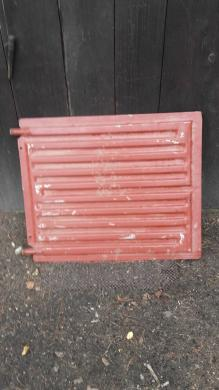

Kermi radiatoriai. Akcija!
2020.10.29 11:16
Šoninio pajungimo radiatoriai Apatinio pajungimo radiatoriai Radiatorių priedai Šoninio pajungimo radiatoriai Apatinio pajungimo radiatoriai Radiatorių priedai Vonios radiatoriai Konvektoriai Kermi radiatorių ypatumai Kermi garantija Kaip užsakyti? Prikti išsimokėtinai Pristatymas Apie mus Kontaktai
Užsakymų tel.: 8- 676-21001 , 8-676-20077
Kermi radiatoriai
Kermi radiatoriai tai vokiškas produktas, pagamintas iš itin kokybiškų medžiagų. Išskirtinis dėmesys Kermi radiatorių kokybei, prieinama kaina ir platus asortimentas lemia, kad Kermi yra populiariausi radiatoriai Lietuvoje. Kermi radiatoriaus paviršius padengtas specialiais šilumai laidžiais dažais, o šiluma radiatoriaus viduje paskirstoma taip, kad kuo daugiau jos išspinduliuotų į patalpą. Revoliucinė patentuota Therm X2 šilumos paskirstymo technologija leidžia sutaupyti iki 11% energijos, o aukščiausią kokybę užtikrina 10 metų garantija kiekvienam Kermi radiatoriui.Šoninio pajungimo
Apatinio pajungimo
Radiatorių priedai
Vonios radiatoriai
Konvektoriai Copyright © 2020. KERMI Svetainių kūrimas : Dizaino Arkliukas
- Radiatoriai gera kaina internetu | pigu.lt
- Radiatoriai ir jų dalys | Šildymo prietaisai | Senukai.lt
- Kermi radiatoriai. Akcija!
- Radiatoriai
- Galingumų lentelė | Radiatoriai
- Radiatoriai Internetu pigiau Žema kaina | b-a.eu
- Aliumininiai radiatoriai | Vilpra.lt: Šiluma Jūsų namams
- Radiatoriai - Jaukurai
- Radiatoriai - Radiatoriai | SILTAS.LT
- Radiatoriai internetu | namams24.lt
- Radiatoriai gera kaina internetu | pigu.lt
Radiatoriai yra gaminami keletos rūšių ir galingumų Daugiau Kodėl mes? Mūsų gamybos linija suvartoja daug mažiau elektros energijos, o dažymo ir lakavimo linijoje “Eco Line” nenaudojami tokie organiniai junginiai kaip fosfatai, toksiški sunkieji metalai.
- Radiatoriai ir jų dalys | Šildymo prietaisai | Senukai.lt
Adresas: Savanorių pr. 191 a, LT-02300, Vilnius Telefono nr.: +370 5 232 2498 Darbo laikas: (I - V) 7.30 - 16.30 val.
- Kermi radiatoriai. Akcija!
Radiatoriai yra itin svarbus prietaisas namuose, užtikrinantis šiltą patalpos temperatūrą net ir šalčiausiu metu laiku. Būtent todėl radiatoriai, kuriuos parduodame, pasižymi plačia įvairove – elektriniai, aliuminiai, plieniniai radiatoriai, įvairūs stiliai, spalvos, dydžiai.Nors į gerus radiatorius verta investuoti, mes vis tiek siūlome puikų kainos ir kokybės santykį.
- Radiatoriai
Kermi radiatoriai tai populiariausia šildymo įranga, tiek naujose statybose, tiek renovuojamuose objektuose. Moderni radiatorių gamybos technologija, nedidelė vandens talpa, harmoningas konvekcijos ir spinduliavimo būdu atiduodamas šilumos srautas užtikrina didelę radiatoriaus šilumos galią.
- Galingumų lentelė | Radiatoriai
Radiatoriai skirstomi į du pagrindinius tipus: plokštinius radiatorius (plienininiai) ir sekcijinius (iš ketaus ar aliuminio, arba kombinuoti). Lyginant skirtingų radiatorių savybes, išsiskiria ketiniai – juose yra didesnis vandens tūris, todėl jie yra labai inertiški, tačiau labai patvarūs ir ilgaamžiai.
- Radiatoriai Internetu pigiau Žema kaina | b-a.eu
Plieniniai radiatoriai internetu gera kaina.Internetinėje parduotuvėje b-a.eu rasite virš 700 įvairaus modelio plieninių radiatorių. Naujausi pasiūlymai geriausiomis kainomis. Vyksta dažnos akcijos., kaina internetu pigiau.
- Aliumininiai radiatoriai | Vilpra.lt: Šiluma Jūsų namams
Praktiški aliumininiai radiatoriai namams ir kitoms patalpoms šildyti. Skirtingo pločio ir matmenų plieniniai radiatoriai. Žinomi gamintojai, plati pasiūla, geros kainos, taikomos nuolaidos ir akcijos.
- Radiatoriai - Jaukurai
Plieniniai radiatoriai pasižymi greitu ir patogiu montavimu – radiatoriai tvirtinami universaliais laikikliais ir gali būti apsukami, todėl paprasta montuoti toje pusėje, kurioje yra vandens įvadas. Gamintojai HM Heizkorper ir Borpan užtikrinina aukštą plieninių radiatorių kokybę.
- Radiatoriai - Radiatoriai | SILTAS.LT
Centrinio šildymo radiatoriai gera kaina pigu.lt! Apačioje pajungiami, šone pajungiami radiatoriai internetu pigiau. Kermi, Purmo ir kiti prekiniai ženklai.
- Radiatoriai internetu | namams24.lt
Radiatoriai namuose daugiausia dėmesio sulaukia prasidėjus šildymo sezonui, kai nuo jų sklinda maloni šiluma, suteikdama ne tik šilumos, bet ir jaukimo namams. Šiuolaikiniai radiatoriai net tampa tam tikru interjero akcentu. Radiatoriaus pasirinkimas - nelengvas procesas, nes lemia ne tik šildymo efektyvumą, bet ir vizualinį patalpos vaizdą.
Radiatoriai yra gaminami keletos rūšių ir galingumų Daugiau Kodėl mes? Mūsų gamybos linija suvartoja daug mažiau elektros energijos, o dažymo ir lakavimo linijoje “Eco Line” nenaudojami tokie organiniai junginiai kaip fosfatai, toksiški sunkieji metalai.
Adresas: Savanorių pr. 191 a, LT-02300, Vilnius Telefono nr.: +370 5 232 2498 Darbo laikas: (I - V) 7.30 - 16.30 val.
Radiatoriai yra itin svarbus prietaisas namuose, užtikrinantis šiltą patalpos temperatūrą net ir šalčiausiu metu laiku. Būtent todėl radiatoriai, kuriuos parduodame, pasižymi plačia įvairove – elektriniai, aliuminiai, plieniniai radiatoriai, įvairūs stiliai, spalvos, dydžiai.Nors į gerus radiatorius verta investuoti, mes vis tiek siūlome puikų kainos ir kokybės santykį.
Kermi radiatoriai tai populiariausia šildymo įranga, tiek naujose statybose, tiek renovuojamuose objektuose. Moderni radiatorių gamybos technologija, nedidelė vandens talpa, harmoningas konvekcijos ir spinduliavimo būdu atiduodamas šilumos srautas užtikrina didelę radiatoriaus šilumos galią.
Radiatoriai skirstomi į du pagrindinius tipus: plokštinius radiatorius (plienininiai) ir sekcijinius (iš ketaus ar aliuminio, arba kombinuoti). Lyginant skirtingų radiatorių savybes, išsiskiria ketiniai – juose yra didesnis vandens tūris, todėl jie yra labai inertiški, tačiau labai patvarūs ir ilgaamžiai.
Plieniniai radiatoriai internetu gera kaina.Internetinėje parduotuvėje b-a.eu rasite virš 700 įvairaus modelio plieninių radiatorių. Naujausi pasiūlymai geriausiomis kainomis. Vyksta dažnos akcijos., kaina internetu pigiau.
Praktiški aliumininiai radiatoriai namams ir kitoms patalpoms šildyti. Skirtingo pločio ir matmenų plieniniai radiatoriai. Žinomi gamintojai, plati pasiūla, geros kainos, taikomos nuolaidos ir akcijos.
Plieniniai radiatoriai pasižymi greitu ir patogiu montavimu – radiatoriai tvirtinami universaliais laikikliais ir gali būti apsukami, todėl paprasta montuoti toje pusėje, kurioje yra vandens įvadas. Gamintojai HM Heizkorper ir Borpan užtikrinina aukštą plieninių radiatorių kokybę.
Centrinio šildymo radiatoriai gera kaina pigu.lt! Apačioje pajungiami, šone pajungiami radiatoriai internetu pigiau. Kermi, Purmo ir kiti prekiniai ženklai.
Radiatoriai namuose daugiausia dėmesio sulaukia prasidėjus šildymo sezonui, kai nuo jų sklinda maloni šiluma, suteikdama ne tik šilumos, bet ir jaukimo namams. Šiuolaikiniai radiatoriai net tampa tam tikru interjero akcentu. Radiatoriaus pasirinkimas - nelengvas procesas, nes lemia ne tik šildymo efektyvumą, bet ir vizualinį patalpos vaizdą.
